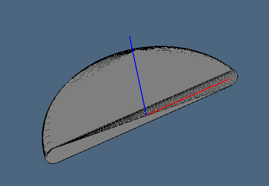
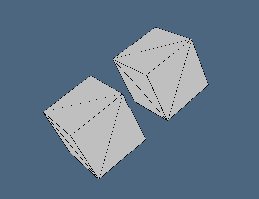

Stato dell'arte

Nel momento in cui abbiamo preso in mano questo progetto, esso si presentava con pochi difetti in realtà. Al di là di qualche problema di configurazione iniziale dovuta a delle dipendenze Julia non soddisfatte, infatti, l'unico intervento necessario era quello di ottimizzare i tempi di esecuzione. Non erano quindi presenti errori veri e propri nel codice, ma il nostro obbiettivo era quello di migliorare le prestazioni del programma.
Mapper.jl
L'obbiettivo primario del file mapper.jl contiene l'implementazione di diverse primitive parametriche, incluse curve, superfici e solidi incorporati in 2D o 3D. L'approccio costruttivo è comune a tutti i metodi. Consiste nel generare una scomposizione semplice o cuboidale di un semplice dominio geometrico in u,v o u,v,w spazio parametrico. Quindi un cambio di coordinate, ad es. da coordinate cartesiane a coordinate polari o cilindriche, si applica ai vertici della cellula complesso che decompone il dominio.
LinearAlgebricRepresentation, come il suo linguaggio geometrico antenato PLASM e la sua libreria padre pyplasm mira ad essere multidimensionale. Quindi alcune funzioni generano modelli geometrici di dimensioni variabili. Esempi importanti sono cuboidGrid e simplexGrid, il cui parametro unico è la forma della mesh generata, ovvero il numero di celle $d$-dimensionali in ciascuna dimensione, con d = lunghezza(forma). I vertici della mesh rimangono sulla griglia intera di dimensioni e dimensioni adeguate.
